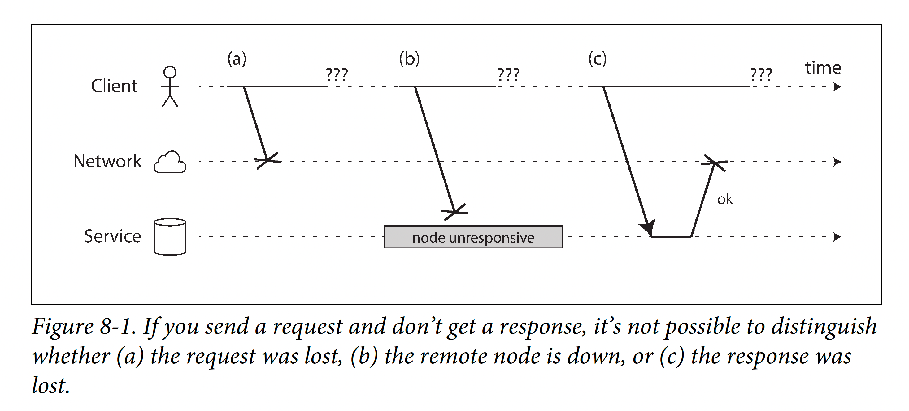
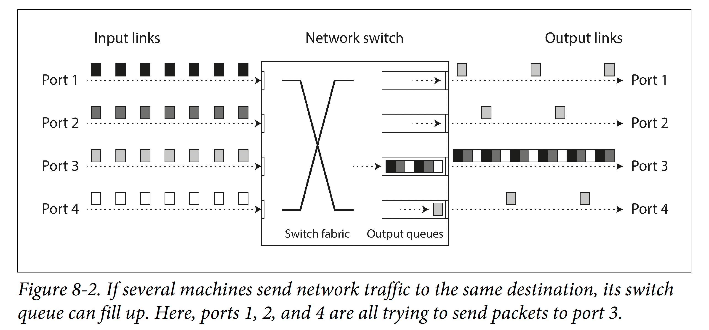
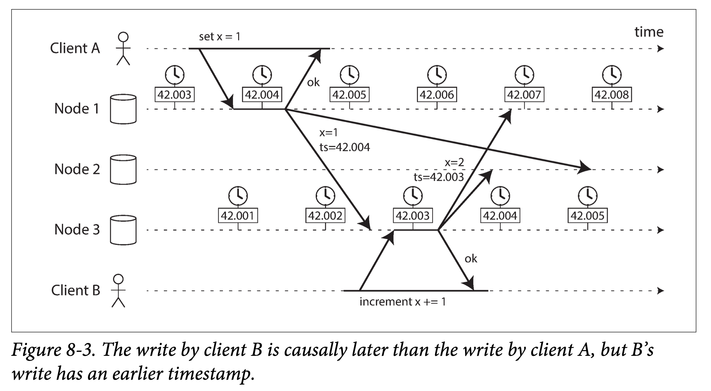
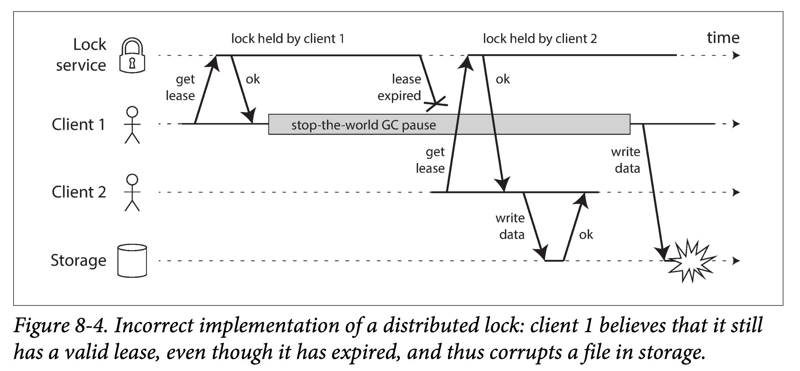
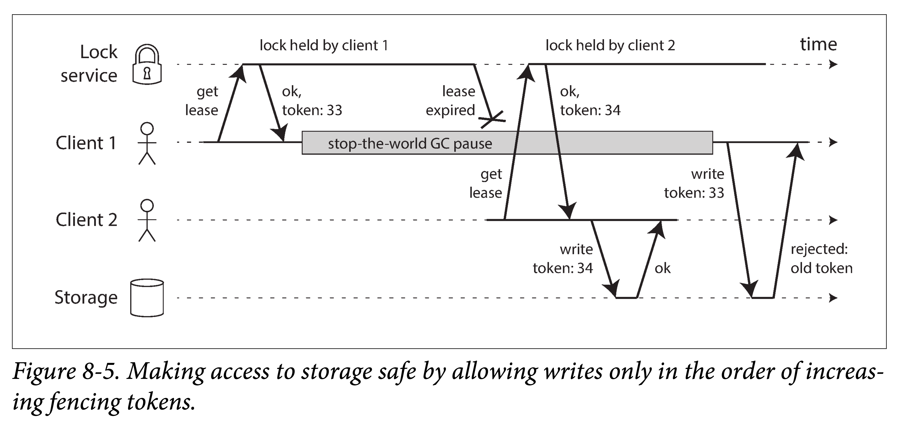

DDIA 阅读笔记第八章：分布式系统中的麻烦
分布式系统中，任何可能出错的事情都会出错。不可靠的网络、不同步的时钟，这些麻烦使得分布式系统的软件需要处理更多棘手的问题。本章讨论了这些问题和他们能够避免的程度。
简介
最近几章讨论了系统如何处理错误。例如，副本故障切换，复制延迟和事务。尽管已经讨论了很多错误，但之前几章仍然过于乐观。现实更加黑暗。本章将悲观主义最大化，假设任何可能出错的东西都会出错。
- 使用分布式系统与在单机上编写软件有着根本的区别：有许多新的情况会使事情出错
本章对分布式系统中可能出现的问题进行总结，包含两大类：
- 网络
- 时钟和时序
并讨论他们可以避免的程度。
故障与部分失效
单个计算机上的程序通常会以一种相当可预测的方式运行：要么工作，要么不工作。
- 软件是确定性的：当硬件正常工作时，相同的操作总是产生相同的结果
- 如果存在硬件问题（例如，内存损坏或连接器松动），其后果通常是整个系统故障（例如，内核恐慌，“蓝屏死机”，启动失败）
这是计算机设计中的一个慎重的选择：如果发生内部错误，宁愿电脑完全崩溃，也不要返回错误的结果，因为错误的结果很难处理。
当你编写运行在多台计算机上的软件时，情况有本质上的区别。在分布式系统中，我们不再处于理想化的系统模型中，我们别无选择，只能面对现实世界的混乱现实。而在现实世界中，各种各样的事情都可能会出现问题：
- 部分失效（partial failure）：在分布式系统中，尽管系统的其他部分工作正常，但系统的某些部分可能会以某种不可预知的方式被破坏。部分失效是不确定的（nonderterministic）。
- 你甚至不知道是否成功了，因为消息通过网络传播的时间也是不确定的
这种不确定性和部分失效的可能性，使得分布式系统难以工作。
云计算与超级计算机
构建大型计算系统有一系列哲学：
- 一个极端是高性能计算（HPC）领域。具有数千个 CPU 的超级计算机通常用于计算密集型科学计算任务，如天气预报或分子动力学（模拟原子和分子的运动）。
- 另一个极端是 云计算（cloud computing），云计算并不是一个良好定义的概念【6】，但通常与多租户数据中心，连接 IP 网络（通常是以太网）的商用计算机，弹性 / 按需资源分配以及计量计费等相关联。
- 传统企业数据中心位于这两个极端之间。
不同的哲学会导致不同的故障处理方式。在超级计算机中：
- 作业通常会不时地将计算状态存盘到持久存储中。如果一个节点出现故障，通常的解决方案是简单地停止整个集群的工作负载。故障节点修复后，计算从上一个检查点重新开始
- 超级计算机更像是一个单节点计算机而不是分布式系统：通过让部分失败升级为完全失败来处理部分失败 —— 如果系统的任何部分发生故障，只是让所有的东西都崩溃
本书中的重点在于实现互联网服务的系统，这些系统通常与超级计算机看起来有很大不同：
- 在线离线
- 互联网应用程序通常都是 在线（online） 的，需要能够随时以低延迟服务用户。使服务不可用（例如，停止集群以进行修复）是不可接受的
- 相比之下，像天气模拟这样的离线（批处理）工作可以停止并重新启动，影响相当小
- 硬件与成本
- 超级计算机通常由专用硬件构建而成，每个节点相当可靠，节点通过共享内存和 远程直接内存访问（RDMA） 进行通信。
- 云服务中的节点是由商用机器构建而成的，由于规模经济，可以以较低的成本提供相同的性能，而且具有较高的故障率。
- 组网方式不同
- 大型数据中心网络通常基于 IP 和以太网，以 CLOS 拓扑排列，以提供更高的对分（bisection）带宽。
- 超级计算机通常使用专门的网络拓扑结构，例如多维网格和 Torus 网络 ，这为具有已知通信模式的 HPC 工作负载提供了更好的性能。
- 故障常态化
- 系统越大，就越有可能存在坏掉的组件。随着时间的推移，坏掉的东西得到修复，新的东西又坏掉。
- 但是在一个有成千上万个节点的系统中，有理由认为总是有一些东西是坏掉的。当错误处理的策略只由简单放弃组成时，一个大的系统最终会花费大量时间从错误中恢复，而不是做有用的工作。
- 容错
- 如果系统可以容忍发生故障的节点，并继续保持整体工作状态，那么这对于运营和维护非常有用：例如，可以执行滚动升级，一次重新启动一个节点，同时继续给用户提供不中断的服务。在云环境中，如果一台虚拟机运行不佳，可以杀死它并请求一台新的虚拟机（希望新的虚拟机速度更快）。
- 通信
- 互联网软件通常在地理位置上分散部署，保持数据在地理位置上接近用户以减少访问延迟，通信很可能通过互联网进行，与本地网络相比，通信速度缓慢且不可靠。
- 超级计算机通常假设它们的所有节点都靠近在一起。
如果要使分布式系统工作，就必须接受部分故障的可能性，并在软件中建立容错机制。换句话说，需要从不可靠的组件构建一个可靠的系统（没有完美的可靠性，我们需要理解可以实际承诺的极限）。
- 即使在只有少数节点的小型系统中，考虑部分故障也是很重要的。故障处理必须是软件设计的一部分。
- 简单地假设缺陷很罕见，并希望始终保持最好的状况是不明智的。考虑一系列可能的错误（甚至是不太可能的错误），并在测试环境中人为地创建这些情况来查看会发生什么是非常重要的。在分布式系统中，怀疑，悲观和偏执狂是值得的。
从不可靠的组件构建可靠的系统
你可能想知道这是否有意义 —— 直观地看来，系统只能像其最不可靠的组件（最薄弱的环节）一样可靠。事实并非如此：事实上，从不太可靠的基础构建更可靠的系统是计算机领域的一个古老思想。例如：
- 纠错码允许数字数据在通信信道上准确传输，偶尔会出现一些错误，例如由于无线网络上的无线电干扰。
- 互联网协议（Internet Protocol, IP） 不可靠：可能丢弃、延迟、重复或重排数据包。 传输控制协议（Transmission Control Protocol, TCP）在互联网协议（IP）之上提供了更可靠的传输层：它确保丢失的数据包被重新传输，消除重复，并且数据包被重新组装成它们被发送的顺序。
虽然这个系统可以比它的底层部分更可靠，但它的可靠性总是有限的。例如，纠错码可以处理少量的单比特错误，但是如果你的信号被干扰所淹没，那么通过信道可以得到多少数据，是有根本性的限制的。 TCP 可以隐藏数据包的丢失，重复和重新排序，但是它不能消除网络中的延迟。
虽然更可靠的高级系统并不完美，但它仍然有用，因为它处理了一些棘手的低级错误，所以其余的错误通常更容易推理和处理。我们将在 “数据库的端到端原则” 中进一步探讨这个问题。
不可靠的网络
本书中关注的分布式系统是无共享的系统，即一堆机器通过网络连接，只能通过网络通信。
- 机器不能访问另一台机器的内存或磁盘（除了通过网络向服务器发出请求）。
- 无共享 并不是构建系统的唯一方式，但它已经成为构建互联网服务的主要方式，其原因如下：相对便宜，因为它不需要特殊的硬件，可以利用商品化的云计算服务，通过跨多个地理分布的数据中心进行冗余可以实现高可靠性。
互联网和数据中心（通常是以太网）中的大多数内部网络都是 异步分组网络（asynchronous packet networks）：节点可以向另一个节点发送消息（一个数据包），但是网络不能保证它什么时候到达，或者是否到达。如果发送请求并期待响应，则很多事情可能会出错（一些如 图 8-1 所示）：
- 请求丢失：请求可能已经丢失（可能有人拔掉了网线）。
- 请求排队：请求可能正在排队，稍后将交付（也许网络或接收方过载）。
- 不可达：远程节点可能已经失效（可能是崩溃或关机）。
- 暂停：远程节点可能暂时停止了响应（例如长时间的垃圾回收暂停），但稍后会再次响应。
- 响应丢失：远程节点可能已经处理了请求，但是网络上的响应已经丢失（可能是网络交换机配置错误）。
- 响应延迟：远程节点可能已经处理了请求，但是响应已经被延迟，并且稍后将被传递（可能是网络或者你自己的机器过载）。

这些问题在异步网络中难以区分，发送方所拥有的唯一信息是，尚未收到响应。发送者甚至不能分辨数据包是否被发送：唯一的选择是让接收者发送响应消息，但这也可能会丢失或延迟。
处理这个问题的通常方法是超时（Timeout）：在一段时间之后放弃等待，并且认为响应不会到达。
- 但是，当发生超时时，发送方仍不知道远程节点是否收到了请求（如果请求仍然在某个地方排队，那么即使发件人已经放弃了该请求，仍然可能会将其发送给收件人）
真实世界的网络故障
即使建设计算机网络已经有几十年的历史，人们仍没有找出使网络变得可靠的方法。
即使在公司运营的数据中心中，网络问题也可能出乎意料地普遍。
- 在一家中型数据中心进行的一项研究发现，每个月大约有 12 个网络故障，其中一半断开一台机器，一半断开整个机架。
- 另一项研究测量了架顶式交换机，汇聚交换机和负载平衡器等组件的故障率。它发现添加冗余网络设备不会像您所希望的那样减少故障，因为它不能防范人为错误（例如，错误配置的交换机），这是造成中断的主要原因。
诸如 EC2 之类的公有云服务因频繁的暂态网络故障而臭名昭着，管理良好的私有数据中心网络可能是更稳定的环境。尽管如此，没有人不受网络问题的困扰：
- 例如，交换机软件升级过程中的一个问题可能会引发网络拓扑重构，在此期间网络数据包可能会延迟超过一分钟
- 鲨鱼可能咬住海底电缆并损坏它们
- 其他令人惊讶的故障，包括网络接口有时会丢弃所有入站数据包，但是成功发送出站数据包 ：网络链接在一个方向上工作，并不能保证它也在相反的方向工作。
网络分区
当网络的一部分由于网络故障而被切断时，有时称为网络分区（network partition）或网络断裂（netsplit）。在本书中，我们通常会坚持使用更一般的术语网络故障（network fault），以避免与第 6 章讨论的存储系统的分区（分片）相混淆。
即使网络故障在你的环境中非常罕见，故障可能发生的事实，意味着你的软件需要能够处理它们。无论何时通过网络进行通信，都可能会失败，这是无法避免的。
如果网络故障的错误处理没有定义与测试，武断地讲，各种错误可能都会发生：例如，即使网络恢复【20】，集群可能会发生死锁，永久无法为请求提供服务，甚至可能会删除所有的数据。如果软件被置于意料之外的情况下，它可能会做出出乎意料的事情。
处理网络故障并不意味着容忍它们：如果你的网络通常是相当可靠的，一个有效的方法可能是当你的网络遇到问题时，简单地向用户显示一条错误信息。但是，您确实需要知道您的软件如何应对网络问题，并确保系统能够从中恢复。有意识地触发网络问题并测试系统响应（这是 Chaos Monkey 背后的想法）。
检测故障
许多系统需要自动检测故障节点。例如：
- 负载平衡器需要停止向已死亡的节点转发请求，即从移出轮询列表（out of rotation）
- 在单主复制功能的分布式数据库中，如果主库失效，则需要将从库之一升级为新主库
不幸的是，网络的不确定性使得很难判断一个节点是否工作。在某些特定的情况下，可能会收到一些反馈信息，明确告诉某些事情没有成功：
- 如果报文可以到达运行节点的机器，但没有进程正在侦听目标端口（例如，因为进程崩溃），操作系统将通过发送 FIN 或 RST 来关闭并重用 TCP 连接。但是，如果节点在处理请求时发生崩溃，则无法知道远程节点实际处理了多少数据。
- 如果节点进程崩溃（或被管理员杀死），但节点的操作系统仍在运行，则脚本可以通知其他节点有关该崩溃的信息，以便另一个节点可以快速接管，而无需等待超时到期。例如，HBase。
- 如果有权访问数据中心网络交换机的管理界面，则可以查询它们以检测硬件级别的链路故障（例如，远程机器是否关闭电源）。
- 如果路由器确认尝试连接的 IP 地址不可用，则可能会使用 ICMP 目标不可达数据包回复您。但是，路由器不具备神奇的故障检测能力 —— 它受到与网络其他参与者相同的限制。
关于远程节点关闭的快速反馈很有用，但是不能完全指望它。即使 TCP 确认已经传送了一个数据包，应用程序在处理之前可能已经崩溃。如果想确保一个请求是成功的，需要应用程序本身的积极响应。
- 个人理解：建设在传输层之上的应用层协议，关心的是应用程序是否收到消息并正确处理，而不只是报文是否成功到达。
- 这也可以用于回答，为什么 TCP 已经解决了丢包，应用层还是要担心消息丢失？如果 TCP 收到了响应并发送 ACK，但应用层还没来得及处理就宕机了。这种也算消息丢失，但 TCP 已经解决不了这种问题了。
虽然有时对端出错，可以很快收到一个错误，但并不能指望在任何情况下都能很快得到错误回复 —— 可能过了一段时间我们仍然没有得到任何回复。因此，在应用代码里，必须设置一个合理的超时时限和重试次数。直到，你确认没有再重试的必要 —— 即不管远端节点是否存活，在重试几次后，都认为它不可用了（或者暂时不可用）。
超时与无界延迟
超时时间的设置应该设置为多少？
- 不应太长：太长会导致问题检测不及时，用户可能长时间等待。
- 不应太短：太短可能误判，将短暂的网络延迟误判为节点下线，造成不必要的故障转移。
- 如果这个节点实际上是活着的，并且正在执行一些动作（例如，发送一封电子邮件），而另一个节点接管，那么这个动作可能会最终执行两次。
- 故障转移会给其他节点和网络带来额外的负担。如果系统已经处于高负荷状态，则过早宣告节点死亡会使问题更严重。
- 如果节点实际上没有死亡，只是由于过载导致其响应缓慢；这时将其负载转移到其他节点可能会导致 级联失效（ cascading failure）：在极端情况下，所有节点都宣告对方死亡，所有节点都将停止工作。
设有一个理想的系统：
- 能够保证所有的网络通信延迟不超过 d：所有的网络包要么在 d 时间内送达对端、要么就会丢失，即不可能在超过 d 的时限后才到
- 应用层处理请求所需的最大时间为 r
在这种情况下，你可以保证每个成功的请求在 2𝑑+r 时间内都能收到响应，如果你在此时间内没有收到响应，则知道网络或远程节点不工作。如果这是成立的，2𝑑+𝑟2d+r 会是一个合理的超时设置。
不幸的是，我们所使用的大多数系统都没有这些保证：
- 异步网络具有无限的延迟：即尽可能快地传送数据包，但数据包到达可能需要的时间没有上限
- 大多数服务器实现并不能保证它们可以在一定的时间内处理请求
对于故障检测，即使系统大部分时间快速运行也是不够的：如果你的超时时间很短，往返时间只需要一个瞬时尖峰就可以使系统失衡。
网络拥塞和排队
在驾驶汽车时，由于交通拥堵，道路交通网络的通行时间往往不尽相同。同样，计算机网络上数据包延迟的可变性通常是由于排队：
- 交换机：如果多个不同的节点同时尝试将数据包发送到同一目的地，则网络交换机必须将它们排队并将它们逐个送入目标网络链路（如 图 8-2 所示）。在繁忙的网络链路上，数据包可能需要等待一段时间才能获得一个插槽（这称为网络拥塞）。如果传入的数据太多，交换机队列填满，数据包将被丢弃，因此需要重新发送数据包 - 即使网络运行良好。
- 接收方缓冲区：当数据包到达目标机器时，如果所有 CPU 内核当前都处于繁忙状态，则来自网络的传入请求将被操作系统排队，直到应用程序准备好处理它为止。根据机器上的负载，这可能需要一段任意的时间。
- 等待线程调度：在虚拟化环境中，正在运行的操作系统经常暂停几十毫秒，因为另一个虚拟机正在使用 CPU 内核。在这段时间内，虚拟机不能从网络中消耗任何数据，所以传入的数据被虚拟机监视器排队（缓冲），进一步增加了网络延迟的可变性。
- 发送方缓冲区：TCP 执行 流量控制（flow control，也称为 拥塞避免，即 congestion avoidance，或 背压，即 backpressure），其中节点会限制自己的发送速率以避免网络链路或接收节点过载。这意味着甚至在数据进入网络之前，在发送者处就需要进行额外的排队。

此外，TCP 中存在超时重传机制，虽然重传本身对应用层不可见，但是超时重传带来的延迟却是无法掩盖的。
TCP 与 UDP
一些对延迟敏感的应用程序，比如视频会议和 IP 语音（VoIP），使用了 UDP 而不是 TCP。这是在可靠性和和延迟变化之间的折衷：由于 UDP 不执行流量控制并且不重传丢失的分组，所以避免了网络延迟变化的一些原因（尽管它仍然易受切换队列和调度延迟的影响）。
在延迟数据毫无价值的情况下，UDP 是一个不错的选择。例如，在 VoIP 电话呼叫中，可能没有足够的时间重新发送丢失的数据包，并在扬声器上播放数据。在这种情况下，重发数据包没有意义 —— 应用程序必须使用静音填充丢失数据包的时隙（导致声音短暂中断），然后在数据流中继续。重试发生在人类层。 （“你能再说一遍吗？声音刚刚断了一会儿。“）
在公共云和多租户数据中心中，资源被许多客户共享：网络链接和交换机，甚至每个机器的网卡和 CPU（在虚拟机上运行时）。批处理工作负载（如 MapReduce）能够很容易使网络链接饱和。由于无法控制或了解其他客户对共享资源的使用情况，如果附近的某个人正在使用大量资源，则网络延迟可能会发生剧烈变化。
在这种环境下，你只能通过实验方式选择超时：在一段较长的时期内、在多台机器上测量网络往返时间的分布，以确定延迟的预期变化。然后，考虑到应用程序的特性，可以确定 故障检测延迟 与 过早超时风险 之间的适当折衷。
更好的一种做法是，系统不是使用配置的常量超时时间，而是连续测量响应时间及其变化（抖动），并根据观察到的响应时间分布自动调整超时时间。这可以通过 Phi Accrual 故障检测器来完成，该检测器在例如 Akka 和 Cassandra 中使用。 TCP 的超时重传机制也是以类似的方式工作。
同步网络与异步网络
如果我们可以依靠网络来传递一些 最大延迟固定 的数据包，而不是丢弃数据包，那么分布式系统就会简单得多。为什么我们不能在硬件层面上解决这个问题，使网络可靠，使软件不必担心呢？
可以将数据中心网络与非常可靠的传统固定电话网络（非蜂窝，非 VoIP）进行比较：
- 音频帧的延迟和丢失是非常罕见的
- 电话需要很低的端到端延迟，以及足够的带宽来传输你声音的音频采样数据
在计算机网络中有类似的可靠性和可预测性不是很好吗？
当你通过电话网络拨打电话时，它会建立一个电路（circuit）：在两个呼叫者之间的整个路线上为呼叫分配一个固定的，有保证的带宽量。这个电路会保持至通话结束。例如，ISDN 网络以每秒 4000 帧的固定速率运行。呼叫建立时，每个帧内（每个方向）分配 16 位空间。因此，在通话期间，每一方都保证能够每 250 微秒发送一个精确的 16 位音频数据。
这种网络是同步的：即使数据经过多个路由器，也不会受到排队的影响，因为呼叫的 16 位空间已经在网络的下一跳中保留了下来。而且由于没有排队，网络的最大端到端延迟是固定的。我们称之为 有限延迟（bounded delay）。
我们不能简单地使网络延迟可预测吗？
电话网络中的电路与 TCP 连接有很大不同：
- 电路是固定额度的预留带宽，在电路建立时没有其他人可以使用
- TCP 连接的数据包 机会性地 使用任何可用的网络带宽。你可以给 TCP 一个可变大小的数据块，它会尽可能在最短的时间内传输它。 TCP 连接空闲时，不使用任何带宽。
- 如果 TCP keepalive 被启用，会有偶尔的 keepalive 数据包。
如果数据中心网络和互联网是电路交换网络，那么在建立电路时就可以建立一个受保证的最大往返时间。但是，它们并不是：
- 以太网和 IP 是 分组交换协议。没有电路的概念，不得不忍受排队，及其导致的网络无限延迟。
为什么数据中心网络和互联网使用分组交换？答案是，它们针对 突发流量（bursty traffic） 进行了优化。
- 电路适用于音频或视频通话，在通话期间需要每秒传送相当数量的比特。
- 请求网页，发送电子邮件或传输文件没有任何特定的带宽要求 —— 我们只是希望它尽快完成。
如果想通过电路传输文件，得预测一个带宽分配
- 如果猜的太低，传输速度会不必要的太慢，导致网络容量闲置
- 如果猜的太高，电路就无法建立（因为如果无法保证其带宽分配，网络不能建立电路）
因此，将电路用于突发数据传输会浪费网络容量，并且使传输不必要的缓慢。相比之下，TCP 动态调整数据传输速率以适应可用的网络容量。
已经有一些尝试去建立同时支持电路交换和分组交换的混合网络，比如 异步传输模式（Asynchronous Transfer Mode, ATM）。InfiniBand 有一些相似之处：它在链路层实现了端到端的流量控制，从而减少了在网络中排队的需要，尽管它仍然可能因链路拥塞而受到延迟。通过仔细使用 服务质量（quality of service， QoS，数据包的优先级和调度）和 准入控制（admission control，限速发送器），可以在分组网络上模拟电路交换，或提供统计上的 有限延迟。
但是，目前在多租户数据中心和公共云或通过互联网 进行通信时，此类服务质量尚未启用。当前部署的技术不允许我们对网络的延迟或可靠性作出任何保证：我们必须假设网络拥塞，排队和无限的延迟总是会发生。因此，超时时间没有 “正确” 的值 —— 它需要通过实验来确定。
- 互联网服务提供商之间的对等协议和通过 BGP 网关协议（BGP） 建立的路由，与 IP 协议相比，更接近于电路交换。在这个级别上，可以购买专用带宽。但是，互联网路由在网络级别运行，而不是主机之间的单独连接，而且运行时间要长得多。
延迟和资源利用
更一般地说，可以将 延迟不稳定 视为 动态资源分配 的结果。
假设两台电话交换机之间有一条线路，可以同时进行 10,000 个呼叫。通过此线路切换的每个电路都占用其中一个呼叫插槽。因此，你可以将线路视为可由多达 10,000 个并发用户共享的资源。资源以静态方式分配：即使你现在是线路上唯一的呼叫，并且所有其他 9,999 个插槽都未使用，你的电路仍将分配与线路充分利用时相同的固定数量的带宽。
相比之下，互联网动态分享网络带宽。发送者互相推挤和争夺，以让他们的数据包尽可能快地通过网络，并且网络交换机决定从一个时刻到另一个时刻发送哪个分组（即，带宽分配）。这种方法有排队的缺点，但其优点是它最大限度地利用了线路。线路固定成本，所以如果你更好地利用它，你通过线路发送的每个字节都会更便宜。
CPU 也会出现类似的情况：如果你在多个线程间动态共享每个 CPU 内核，则一个线程有时必须在操作系统的运行队列里等待，而另一个线程正在运行，这样每个线程都有可能被暂停一个不定的时间长度。但是，与为每个线程分配静态数量的 CPU 周期相比，这会更好地利用硬件。更好的硬件利用率也是使用虚拟机的重要动机。
如果资源是静态分配的（例如，专用硬件和专用带宽分配），则在某些环境中可以实现 延迟保证。但是，这是以降低利用率为代价的 —— 换句话说，它是更昂贵的。另一方面，动态资源分配的多租户提供了更好的利用率，所以它更便宜，但它具有可变延迟的缺点。
网络中的可变延迟不是一种自然规律，而只是成本 / 收益权衡的结果。
不可靠的时钟
时钟和时间很重要。应用程序以各种方式依赖于时钟来回答以下问题：
- 这个请求是否超时了？
- 这项服务的第 99 百分位响应时间是多少？
- 在过去五分钟内，该服务平均每秒处理多少个查询？
- 用户在我们的网站上花了多长时间？
- 这篇文章在何时发布？
- 在什么时间发送提醒邮件？
- 这个缓存条目何时到期？
- 日志文件中此错误消息的时间戳是什么？
这些例子中：
- 例 1-4 测量了 持续时间（durations），即两个时间点间的时间间隔
- 例 5-8 描述了 时间点（point in time），事件发生的在特定日期和时间
在分布式系统中，时间是一件棘手的事情，因为通信不是即时的：消息通过网络从一台机器传送到另一台机器需要时间。收到消息的时间总是晚于发送的时间，但是由于网络中的可变延迟，我们不知道晚了多少时间。这个事实导致有时很难确定在涉及多台机器时发生事情的顺序。
而且，网络上的每台机器都有自己的时钟，这是一个实际的硬件设备：通常是石英晶体振荡器。这些设备不是完全准确的，可能比其他机器稍快或更慢。可以在一定程度上同步时钟：最常用的机制是 网络时间协议（Network Time Protocol，NTP），它允许根据一组服务器报告的时间来调整计算机时钟。服务器则从更精确的时间源（如 GPS 接收器）获取时间。
单调钟与日历时钟
现代计算机至少有两种不同的时钟：
- 日历时钟（time-of-day clock）：适用于时间点
- 单调钟（monotonic clock）：适用于时间间隔
日历时钟
日历时钟：根据某个日历（也称为 挂钟时间，即 wall-clock time）返回当前日期和时间
- 例如，Linux 上的
clock_gettime(CLOCK_REALTIME)和 Java 中的System.currentTimeMillis()返回自 epoch（UTC 时间 1970 年 1 月 1 日午夜）以来的秒数（或毫秒），根据公历（Gregorian）日历，不包括闰秒。有些系统使用其他日期作为参考点。
日历时钟通常与 NTP 同步，这意味着理想情况下，来自一台机器的时间戳与另一台机器上的时间戳相同。但是实践中会有很多问题。特别是，如果本地时钟在 NTP 服务器之前太远，则它可能会被强制重置，看上去好像跳回了先前的时间点。这些跳跃以及日历时钟经常忽略闰秒的事实，使日历时钟不能用于测量经过时间（elapsed time）。
单调时钟
单调钟适用于测量持续时间（时间间隔）
- 例如超时或服务的响应时间：Linux 上的
clock_gettime(CLOCK_MONOTONIC)，和 Java 中的System.nanoTime()都是单调时钟 - 这个名字来源于他们保证总是往前走（而日历时钟可以往回跳）
单调时钟下，两个读取的差值衡量了中间经过了多长时间，但单次读取的绝对值无任何意义。它可能是计算机启动以来的纳秒数，或类似的任意值。特别是比较来自两台不同计算机的单调钟的值是没有意义的，因为它们并不是一回事。
在具有多个 CPU 的服务器上，每个 CPU 可能有一个单独的计时器，但不一定与其他 CPU 同步。操作系统会补偿所有的差异，并尝试向应用线程表现出单调钟的样子，即使这些线程被调度到不同的 CPU 上。当然，明智的做法是不要太把这种单调性保证当回事。
如果 NTP 协议检测到计算机的本地石英钟比 NTP 服务器要更快或更慢，则可以调整单调钟向前走的频率（这称为 偏移（skewing） 时钟）。默认情况下，NTP 允许时钟速率增加或减慢最高至 0.05%，但 NTP 不能使单调时钟向前或向后跳转。单调时钟的分辨率通常相当好：在大多数系统中，它们能在几微秒或更短的时间内测量时间间隔。
在分布式系统中，使用单调钟测量 经过时间（elapsed time，比如超时）通常很合适，因为它不假定不同节点的时钟之间存在任何同步，并且对测量的轻微不准确性不敏感。
时钟同步与准确性
单调时钟不需要同步，但是日历时钟需要根据 NTP 服务器或其他外部时间源来设置才能有用，否则误差可能越来越大。不幸的是，我们获取时钟的方法并不像你所希望的那样可靠或准确 —— 硬件时钟和 NTP 可能会变幻莫测。举几个例子：
- 计算机中的石英钟不够精确：它会 漂移（drifts，即运行速度快于或慢于预期）。时钟漂移取决于机器的温度。 Google 假设其服务器时钟漂移为 200 ppm（百万分之一），相当于每 30 秒与服务器重新同步一次的时钟漂移为 6 毫秒，或者每天重新同步的时钟漂移为 17 秒。即使一切工作正常，此漂移也会限制可以达到的最佳准确度。
- 如果计算机的时钟与 NTP 服务器的时钟差别太大，可能会拒绝同步，或者本地时钟将被强制重置。任何观察重置前后时间的应用程序都可能会看到时间倒退或突然跳跃。
- 如果某个节点被 NTP 服务器的防火墙意外阻塞，有可能会持续一段时间都没有人会注意到。
- NTP 同步受限于网络延迟，在延迟可变的拥塞网络上时，NTP 同步的准确性会受到限制。一个实验表明，当通过互联网同步时，35ms 的最小误差是可以实现的，尽管偶尔的网络延迟峰值会导致大约一秒的误差。根据配置，较大的网络延迟会导致 NTP 客户端完全放弃。
- 一些 NTP 服务器是错误的或者配置错误的，报告的时间可能相差几个小时。因此 NTP 客户端设计的非常健壮，会查询多个服务器并忽略异常值。无论如何，依赖于互联网上的陌生人所告诉你的时间来保证你的系统的正确性，这还挺让人担忧的。
- 闰秒导致一分钟可能有 59 秒或 61 秒，这会打破一些在设计之时未考虑闰秒的系统的时序假设。闰秒已经使许多大型系统崩溃的事实说明了，关于时钟的错误假设是多么容易偷偷溜入系统中。处理闰秒的最佳方法可能是让 NTP 服务器 “撒谎”，并在一天中逐渐执行闰秒调整（这被称为 拖尾，即 smearing），虽然实际的 NTP 服务器表现各异。
- 在虚拟机中，硬件时钟被虚拟化，这对于需要精确计时的应用程序提出了额外的挑战。当一个 CPU 核心在虚拟机之间共享时，每个虚拟机都会暂停几十毫秒，与此同时另一个虚拟机正在运行。从应用程序的角度来看，这种停顿表现为时钟突然向前跳跃。
- 如果你在没有完整控制权的设备（例如，移动设备或嵌入式设备）上运行软件，则可能完全不能信任该设备的硬件时钟。一些用户故意将其硬件时钟设置为不正确的日期和时间，例如，为了规避游戏中的时间限制，时钟可能会被设置到很远的过去或将来。
虽然有这些问题，但如果不计代价，也可以实现非常好的时钟精度。例如，针对金融机构的欧洲法规草案 MiFID II 要求所有高频率交易基金在 UTC 时间 100 微秒内同步时钟，以便调试 “闪崩” 等市场异常现象，并帮助检测市场操纵。
- 通过 GPS 接收机，精确时间协议（Precision Time Protocol，PTP）以及仔细的部署和监测可以实现这种精确度。
- 然而，这需要很多努力和专业知识，而且有很多东西都会导致时钟同步错误。如果 NTP 守护进程配置错误，或者防火墙阻止了 NTP 通信，由漂移引起的时钟误差可能很快就会变大。
依赖同步时钟
时钟虽然看起来简单易用，但有出乎意料的问题：
一天可能不会有精确的 86,400 秒
日历时钟 可能会前后跳跃
而一个节点上的时间可能与另一个节点上的时间完全不同。
尽管大部分时候，时钟都工作得很好，但仍需要准备健壮的软件来处理不正确的时钟。这与网络类似：
尽管网络在大多数情况下表现良好，但软件的设计必须假定网络偶尔会出现故障，而软件必须正常处理这些故障。时钟也是如此：
时钟问题造成的影响往往不易被发现
- 如果 CPU、内存或者网络故障，系统可能会立即出现很严重的问题，很快就会被注意和修复
- 如果时钟同步出现问题，系统看起来可能仍然可以正常运转，即使时钟偏差越来越大。如果某个软件依赖于精确同步的时钟，那么结果更可能是悄无声息的，仅有微量的数据丢失，而不是一次惊天动地的崩溃。
因此，如果你使用需要同步时钟的软件，必须仔细监控所有机器之间的时钟偏移。时钟偏离其他时钟太远的节点应当被宣告死亡，并从集群中移除。这样的监控可以确保你在损失发生之前注意到破损的时钟。
有序事件的时间戳
考虑一种危险的依赖时钟的情况：使用节点的本地时钟来给跨节点的事件定序。 例如，如果两个客户端写入分布式数据库，谁先到达？ 哪个是最新的更新？
图 8-3 展示了在多主复制的数据库中对时钟的危险使用：
- 客户端 A 在节点 1 上写入
x = 1；写入被复制到节点 3 - 客户端 B 在节点 3 上增加 x（现在
x = 2） - 最后这两个写入都被复制到节点 2

图 8-3 客户端 B 的写入比客户端 A 的写入要晚，但是 B 的写入具有较早的时间戳。在 图 8-3 中，当一个写入被复制到其他节点时，它会根据发生写入的节点上的日历时钟标记一个时间戳。在这个例子中，时钟同步是非常好的：节点 1 和节点 3 之间的偏差小于 3ms，这可能比你在实践中能预期的更好。
尽管如此，图 8-3 中的时间戳却无法正确排列事件：写入 x = 1 的时间戳为 42.004 秒，但写入 x = 2 的时间戳为 42.003 秒，即使 x = 2 在稍后出现。当节点 2 接收到这两个事件时，会错误地推断出 x = 1 是最近的值，而丢弃写入 x = 2。效果上表现为，客户端 B 的增量操作会丢失。
这种冲突解决策略被称为 最后写入胜利（LWW），它在多主复制和无主数据库（如 Cassandra 和 Riak ）中被广泛使用。有些实现会在客户端而不是服务器上生成时间戳，但这并不能改变 LWW 的基本问题：
- 写入可能会神秘地消失：时钟滞后的节点无法覆盖之前时钟超前的节点写入的值，直到节点之间的时钟偏差消逝。此方案可能导致一定数量的数据被悄悄丢弃，而未向应用报告任何错误。
- 无法区分因果关系：LWW 无法区分 高频顺序写入（在 图 8-3 中，客户端 B 的增量操作 一定 发生在客户端 A 的写入之后）和 真正并发写入（写入者意识不到其他写入者）。需要额外的因果关系跟踪机制（例如版本向量），以防止违背因果关系（请参阅 “检测并发写入”）。
- 两个节点可能生成具有相同时间戳的写入，特别是在时钟仅具有毫秒分辨率的情况下。为了解决这样的冲突，还需要一个额外的 决胜值（tiebreaker，可以简单地是一个大随机数），但这种方法也可能会导致违背因果关系。
因此，尽管通过保留最 “最近” 的值并放弃其他值来解决冲突是很诱惑人的，但是要注意，“最近” 的定义取决于本地的 日历时钟，这很可能是不正确的。即使用严格同步的 NTP 时钟，一个数据包也可能在时间戳 100 毫秒（发送者的时钟）时发送，并在时间戳 99 毫秒（接收者的时钟）处到达 —— 看起来好像数据包在发送之前已经到达，这是不可能的。
NTP 同步是否能足够准确，避免这种不正确的排序发生？不能。因为 NTP 本身就是通过网络进行同步的，其精度则必受限于同步两侧的往返延迟，更遑论叠加其他误差，比如石英钟的漂移（quartz drift）。换句话说，为了处理网络误差以正确定序，我们需要使用更精确的手段，而非网络本身（NTP）。
逻辑时钟 vs 物理时钟：
- 逻辑时钟（logic clock） ：基于递增计数器而不是振荡石英晶体，对于排序事件来说是更安全的选择（请参阅 “检测并发写入”）。逻辑时钟不测量一天中的时间或经过的秒数，而仅测量事件的相对顺序（无论一个事件发生在另一个事件之前还是之后）。
- 物理时钟（physical clock）：日历时钟 和 单调钟 ，用来测量实际经过时间
- 我们将在 “顺序保证” 中来看顺序问题。
时钟读数的置信区间
尽管你可以从机器上读取以微秒（microsecond）甚至纳秒（nanosecond）为单位的日历时间戳（time-of-day），但这并不意味你可以得到具有这样精度的绝对时间。如前所述，误差来自于几方面：
- 石英晶振漂移。如果你直接从本地石英钟读取时间戳，其偏移很容易就可以累积数毫秒。
- NTP 同步误差。如果你想定时通过 NTP 来同步，比如每分钟同步一次。但 NTP 协议是走网络的，而网络通信最快做到毫秒级延迟，偶有拥塞，延迟便能冲到数百毫秒。
总结来说，使用普通硬件，你无论如何都难以得到真正 “准确” 的时间戳。
因此，将时钟的读数视为一个时间点意义不大，准确来说，其读数应该是一个具有置信区间的时间范围。比如，一个系统有 95% 的信心保证当前时刻落在该分钟过 10.3 到 10.5 秒，但除此以外，不能提供任何一进步的保证。在 +/– 100 ms 的置信区间内，时间戳的微秒零头毫无意义。
时钟的误差区间可以通过你的时钟源进行计算：
- 高精度硬件。如果你的机器使用了 GPS 接收器或者铯原子钟，则硬件制造商会提供误差范围。
- 其他服务器。如果你通过 NTP 服务从其他服务器获取时间。则误差区间是几种因素叠加：该 NTP 服务器的误差范围、服务器间的往返延迟、同步后石英晶振漂移等等。
但不幸，大多数服务器的时钟系统 API 在给出时间点时，并不会一并给出对应的不确定区间。例如，你使用 clock_gettime() 系统调用获取时间戳时，返回值并不包括其置信区间，因此你无法知道这个时间点的误差是 5 毫秒还是 5 年。
一个有趣的反例是谷歌在 Spanner 系统中使用的 TrueTime API，会显式的给出置信区间。当你向 TrueTime 系统询问当前时钟时，会得到两个值，或者说一个区间：[earliest, latest]，前者是最早可能的时间戳。后者是最迟可能的时间错。通过该不确定预估，我们可以确定准确时间点就在该时钟范围内。此时，区间的大小取决于，上一次同步过后本地石英钟的漂移多少。
用于快照的时钟同步
快照隔离的实现通常需要一个全局自增的事务 ID。如果一个写入发生在快照 S 之后，则基于快照 S 的事务看不到该写入的内容。对于单机数据库，简单的使用一个全局自增计数器，就能够充当事务 ID 的来源。
然而，当数据库横跨多个机器，甚至多个数据库中心时，一个可用于事务全局自增 ID 并不容易实现，因为需要进行多机协作。事务 ID 必须要反应因果性：如当事务 B 读到事务 A 写的内容时，事务 B 的事务 ID 就需要比事务 A 大。非如此，快照不能维持一致。另外，如果系统中存在大量短小事务，分配事务 ID 可能会成为分布式系统中的一个瓶颈。
- 这其实就是分布式事务中常说的 TSO 方案（Timestamp Oracle，统一中心授时），这种方案通常会有性能瓶颈；尤其在跨数据中心的数据库里，会延迟很高，实践中也有很多优化方案。
- 存在分布式 ID 生成器，例如 Twitter 的雪花算法（Snowflake），其以可伸缩的方式（例如，通过将 ID 空间的块分配给不同节点）近似单调地增加唯一 ID。但是，它们通常无法保证与因果关系一致的排序，因为分配的 ID 块的时间范围比数据库读取和写入的时间范围要长。另请参阅 “第九章的顺序保证”。
由于时钟同步的不确定性，简单使用机器的日历时钟的时间戳作为事务 ID 是不太靠谱的。
但 Spanner 就使用了物理时钟实现了快照隔离：
- 使用 TrueTime 的 API 时，让其返回一个置信区间，而非一个时间点，来代表一个时间戳。
- 对于两个时间戳 A 和 B（A = [Aearliest, Alatest]，B = [Bearliest, Blatest]）
- 如果这两个时间戳对应的区间没有交集（例如，Aearliest < Alatest < Bearliest < Blatest），则可以确信时间戳 B 发生于 A 之后
- 但如果两个区间有交集，则不能确定 A 和 B 的相对顺序。
- 为了保证这种时间戳能够用作事务 ID，相邻生成的两个时间戳最好要间隔一个置信区间，以保证其没有交集。为此，Spanner 在索要时间戳时（比如提交事务），会等待一个置信区间。因此置信区间越小，这种方案的性能也就越好。
- 为此，谷歌在每个数据中心使用了专门的硬件做为时钟源，比如原子钟和 GPS 接收器，以保证时钟的置信区间不超过 7 ms。
进程暂停
让我们考虑在分布式系统中使用危险时钟的另一个例子。假设你有一个数据库，每个分区只有一个领导者。只有领导被允许接受写入。一个节点如何知道它仍然是领导者（它并没有被别人宣告为死亡），并且它可以安全地接受写入？
一种选择是领导者从其他节点获得一个 租约（lease），类似一个带超时的锁。任一时刻只有一个节点可以持有租约 —— 因此，当一个节点获得一个租约时，它知道它在某段时间内自己是领导者，直到租约到期。为了保持领导地位，节点必须周期性地在租约过期前续期。
如果节点发生故障，就会停止续期，所以当租约过期时，另一个节点可以接管。
可以想象，请求处理循环看起来像这样：
1 | while (true) { |
这个代码有什么问题？
- 依赖于同步时钟：租约到期时间由另一台机器设置（例如，当前时间加上 30 秒，计算到期时间），并将其与本地系统时钟进行比较。如果时钟不同步超过几秒，这段代码将开始做奇怪的事情。
- 假设执行很快：代码假定在执行剩余时间检查
System.currentTimeMillis()和实际执行请求process(request)中间的时间间隔非常短。- 通常情况下，这段代码运行得非常快，所以 10 秒的缓冲区已经足够确保 租约 在请求处理到一半时不会过期。
但是，如果程序执行中出现了意外的停顿呢？例如，想象一下，线程在 lease.isValid() 行周围停止 15 秒，然后才继续。在这种情况下，在请求被处理的时候，租约可能已经过期，而另一个节点已经接管了领导。然而，没有什么可以告诉这个线程已经暂停了这么长时间了，所以这段代码不会注意到租约已经到期了，直到循环的下一个迭代 —— 到那个时候它可能已经做了一些不安全的处理请求。
假设一个线程可能会暂停很长时间，这是疯了吗？不幸的是，这种情况发生的原因有很多种：
- 许多编程语言运行时（如 Java 虚拟机）都有一个垃圾收集器（GC），偶尔需要停止所有正在运行的线程。这些 “停止所有处理（stop-the-world）”GC 暂停有时会持续几分钟！甚至像 HotSpot JVM 的 CMS 这样的所谓的 “并行” 垃圾收集器也不能完全与应用程序代码并行运行，它需要不时地停止所有处理。尽管通常可以通过改变分配模式或调整 GC 设置来减少暂停，但是如果我们想要提供健壮的保证，就必须假设最坏的情况发生。
- 在虚拟化环境中，可以 挂起（suspend）虚拟机（暂停执行所有进程并将内存内容保存到磁盘）并恢复（恢复内存内容并继续执行）。这个暂停可以在进程执行的任何时候发生，并且可以持续任意长的时间。这个功能有时用于虚拟机从一个主机到另一个主机的实时迁移，而不需要重新启动，在这种情况下，暂停的长度取决于进程写入内存的速率。
- 在用户的终端设备（如笔记本电脑）上，执行也可能被暂停并随意恢复，例如当用户关闭笔记本电脑的盖子时。
- 当操作系统上下文切换到另一个线程时，或者当管理程序切换到另一个虚拟机时（在虚拟机中运行时），当前正在运行的线程可能在代码中的任意点处暂停。在虚拟机的情况下，在其他虚拟机中花费的 CPU 时间被称为 窃取时间（steal time）。如果机器处于重负载下（即，如果等待运行的线程队列很长），暂停的线程再次运行可能需要一些时间。
- 如果应用程序执行同步磁盘访问，则线程可能暂停，等待缓慢的磁盘 I/O 操作完成。在许多语言中，即使代码没有包含文件访问，磁盘访问也可能出乎意料地发生 —— 例如，Java 类加载器在第一次使用时惰性加载类文件，这可能在程序执行过程中随时发生。 I/O 暂停和 GC 暂停甚至可能合谋组合它们的延迟。如果磁盘实际上是一个网络文件系统或网络块设备（如亚马逊的 EBS），I/O 延迟进一步受到网络延迟变化的影响。
- 如果操作系统允许磁盘交换区（swapping to disk），则简单的内存访问可能导致 页面错误（page fault），要求将磁盘中的页面装入内存。当这个缓慢的 I/O 操作发生时，线程暂停。如果内存压力很高，则可能需要将另一个页面换出到磁盘。在极端情况下，操作系统可能花费大部分时间将页面交换到内存中，而实际上完成的工作很少（这被称为 抖动，即 thrashing）。为了避免这个问题，通常在服务器机器上禁用页面调度（如果你宁愿干掉一个进程来释放内存，也不愿意冒抖动风险）。
- 可以通过发送 SIGSTOP 信号来暂停 Unix 进程，例如通过在 shell 中按下 Ctrl-Z。 这个信号立即阻止进程继续执行更多的 CPU 周期，直到 SIGCONT 恢复为止，此时它将继续运行。 即使你的环境通常不使用 SIGSTOP，也可能由运维工程师意外发送。
所有这些事件都可以随时 抢占（preempt） 正在运行的线程，并在稍后的时间恢复运行，而线程甚至不会注意到这一点。这个问题类似于在单个机器上使多线程代码线程安全：你不能对时序做任何假设，因为随时可能发生上下文切换，或者出现并行运行。
当在一台机器上编写多线程代码时，我们有相当好的工具来实现线程安全：互斥量，信号量，原子计数器，无锁数据结构，阻塞队列等等。不幸的是，这些工具并不能直接转化为分布式系统操作，因为分布式系统没有共享内存，只有通过不可靠网络发送的消息。
分布式系统中的节点，必须假定其执行可能在任意时刻暂停相当长的时间，即使是在一个函数的中间。在暂停期间，世界的其它部分在继续运转，甚至可能因为该节点没有响应，而宣告暂停节点的死亡。最终暂停的节点可能会继续运行，在再次检查自己的时钟之前，甚至可能不会意识到自己进入了睡眠。
响应时间保证
在许多编程语言和操作系统中，线程和进程可能暂停一段无限制的时间，正如讨论的那样。如果你足够努力，导致暂停的原因是 可以 消除的。
某些软件的运行环境要求很高，不能在特定时间内响应可能会导致严重的损失：控制飞机、火箭、机器人、汽车和其他物体的计算机必须对其传感器输入做出快速而可预测的响应。在这些系统中，软件必须有一个特定的 截止时间（deadline），如果截止时间不满足，可能会导致整个系统的故障。这就是所谓的 硬实时（hard real-time）系统。
实时是真的吗？
- 在嵌入式系统中，实时是指系统经过精心设计和测试，以满足所有情况下的特定时间保证。
- 这个含义与 Web 上对实时术语的模糊使用相反，后者描述了服务器将数据推送到客户端以及没有严格的响应时间限制的流处理。
例如，如果车载传感器检测到当前正在经历碰撞，你肯定不希望安全气囊释放系统因为 GC 暂停而延迟弹出。
在系统中提供 实时保证 需要各级软件栈的支持：
- 一个实时操作系统（RTOS），允许在指定的时间间隔内保证 CPU 时间的分配
- 库函数必须申明最坏情况下的执行时间
- 动态内存分配可能受到限制或完全不允许（实时垃圾收集器存在，但是应用程序仍然必须确保它不会给 GC 太多的负担）
- 必须进行大量的测试，以确保达到保证
所有这些都需要大量额外的工作，严重限制了可以使用的编程语言、库和工具的范围（因为大多数语言和工具不提供实时保证）。由于这些原因，开发实时系统非常昂贵，并且它们通常用于安全关键的嵌入式设备。而且，“实时” 与 “高性能” 不一样 —— 事实上，实时系统可能具有较低的吞吐量，因为他们必须让及时响应的优先级高于一切。
对于大多数服务器端数据处理系统来说，实时保证是不经济或不合适的。因此，这些系统必须承受在非实时环境中运行的暂停和时钟不稳定性。
限制垃圾收集的影响
如何降低垃圾回收的影响：
- 配置垃圾回收参数。
- 语言运行时在进行垃圾回收时具有一定的灵活性，因为它们可以跟踪对象分配的速度和随着时间的推移剩余的空闲内存。
- 将 GC 暂停视为一个节点的短暂计划中断，并在这个节点收集其垃圾的同时，让其他节点处理来自客户端的请求
- 如果运行时可以警告应用程序一个节点很快需要 GC 暂停，那么应用程序可以停止向该节点发送新的请求，等待它完成处理未完成的请求，然后在没有请求正在进行时执行 GC。
- 这个技巧向客户端隐藏了 GC 暂停，并降低了响应时间的高百分比。一些对延迟敏感的金融交易系统使用这种方法。
- 只用垃圾收集器来处理短时对象（这些对象可以快速收集），并定期在积累大量长寿对象（因此需要完整 GC）之前重新启动进程。
- 一次可以重新启动一个节点，在计划重新启动之前，流量可以从该节点移开，就像滚动升级一样。
这些措施不能完全阻止垃圾回收带来的暂停，但可以有效地减少它们对应用的影响。
知识、事实和谎言
到此为止，本章已经梳理了分布式系统和单机系统的诸多差异：
- 进程间不能共享内存，只能通过消息传递来交互
- 唯一的通信渠道（网络）还是不可靠的，且有无界（unbounded）延迟
- 时钟同步不可靠
- 随时可能发生的进程停顿
如果你不习惯于分布式系统，那么这些问题的后果就会让人迷惑不解。网络中的一个节点无法确切地知道任何事情 —— 它只能根据它通过网络接收到（或没有接收到）的消息进行猜测。节点只能通过交换消息来找出另一个节点所处的状态（存储了哪些数据，是否正确运行等等）。如果远程节点没有响应，则无法知道它处于什么状态，因为网络中的问题不能可靠地与节点上的问题区分开来。
这些系统的讨论与哲学有关：
- 在系统中什么是真什么是假？
- 如果感知和测量的机制都是不可靠的，那么关于这些知识我们又能多么确定呢？
- 软件系统应该遵循我们对物理世界所期望的法则，如因果关系吗？
在分布式系统中，我们可以陈述关于行为（系统模型）的假设，并以满足这些假设的方式设计实际系统。算法可以被证明在某个系统模型中正确运行。这意味着即使底层系统模型提供了很少的保证，也可以实现可靠的行为。
但是，尽管可以使软件在不可靠的系统模型中表现良好，但这并不是可以直截了当实现的。在本章的其余部分中，我们将进一步探讨分布式系统中的知识和事实的概念，这将有助于我们思考我们可以做出的各种假设以及我们可能希望提供的保证。
事实由多数派定义
设想一个具有非对称故障（asymmetric fault）的网络：某个节点可以收到任何其他节点发送给他的信息，但其发出的消息却被丢弃或者延迟很高。此时，尽管该节点运行良好，并且能处理请求，但却无人能收到其响应。在经过某个超时阈值后，其他节点由于收不到其消息，会将其标记为死亡。
打个比方，这种情况就像一个噩梦：处于半连接的节点就像躺在棺材里被运向墓地，尽管他持续大喊：“我没有死”，但没有人能听到他的喊声，葬礼继续。
第二个场景，稍微不那么噩梦一些，这个处于半连接的节点意识到了他发出去的消息别人收不到，进而推测出应该是网络出了问题。但纵然如此，该节点仍然被标记为死亡，而它也没有办法做任何事情来改变，但起码他自己能意识到这一点。
第三个场景，假设一个节点经历了长时间的 GC，该节点上的所有线程都被中断长达一分钟，此时任何发到该节点的请求都无法被处理，自然也就无法收到答复。其他节点经过等待、重试、失掉耐心进而最终标记该节点死亡，然后将其送进棺材板。经过漫长的一分钟后，终于，GC 完成，所有线程被唤醒从中断处继续执行。从该线程的角度来看，好像没有发生过任何事情。但是其他节点惊讶地发现棺材板压不住了，该节点坐起来了，恢复了健康，并且又开始跟旁边的人很开心的聊天了。
上述几个故事都表明，任何节点都没法独自断言其自身当前状态。一个分布式系统不能有单点依赖，因为单个节点可能在任意时刻故障，进而导致整个系统卡住，甚而不能恢复。因此，大部分分布式算法会基于一个法定人数（quorum），即让所有节点进行投票：任何决策都需要达到法定人数才能生效，以避免对单节点的依赖。
其中，前面故事中的宣布某个节点死亡就是这样一种决策。如果有达到法定个数的节点宣布某节点死亡，那他就会被标记为死亡。即使他还活着，也不得不服从系统决策而出局。
最普遍的情况是，法定人数是集群中超过半数的节点，即多数派（其他比例的法定人数也有可能）。多数派系统允许少数节点宕机后，集群仍能继续工作（如三节点集群，可以容忍一个节点的故障；五节点集群，可以容忍两个节点故障）。并且在少数节点故障后，集群仍能安全地做出决策。因为在一个集群中，根据鸽巢原理，系统中不可能有两个多数派做出不同的决策。
领导者和锁
在很多场景下，系统会要求某些东西全局唯一，比如：
- 每个数据库分片都有唯一的领导者，避免脑裂
- 只有一个事务或者客户端允许持有某资源或者对象的锁，以避免并发写入或者删除
- 每个名字最多允许一个用户注册，因为需要用用户名来唯一标识一个用户
在分布式系统中实现这种唯一性需要格外小心：尽管某个节点自认为它是那个 “唯一被选中的（The chosen one）”（分区的主副本、锁的持有者、成功处理用户名注册请求的节点），这并不意味着法定数目的（Quorum）节点也都如此认为！可能一个节点以前是领导者，但在其领导期间，如果其他节点都认为它死了（可能由于网络故障或者 GC 停顿），它就有可能被降级，且其他节点被选举上位。
当大多数节点认为前领导者死亡时，该节点仍然自顾自的行使领导权，在设计的不太好的系统中，就会带来一些问题。这样的前领导节点可能会给其他节点发送一些错误决策的消息，如果其他节点相信且接受了这些消息，系统在整体层面可能就会做出一些错误的事情。
图 8-4 展示了一个由错误实现的锁导致的数据损坏（data corruption）的 Bug（这个 Bug 并存在于纯理论上，HBase 曾经就有这个 Bug）。假设你想保证在任意时刻，存储服务上的文件最多只能被一个客户端访问，以避免多个客户端并发修改时损坏数据。具体到实现上，你想让客户端在访问文件时，先从锁服务获取一个租约：
前面小节 “进程停顿” 中其实讲到了这么做会导致的问题：如果持有租约的客户端停顿了过长时间，以至于租约过期。此时，另外一个客户端向锁服务请求并获取到同一个文件的租约，然后开始写文件。当前一个停顿的客户端恢复时，它想当然的认为自己仍然持有租约，也开始写文件。此时，这两个客户端的写入可能会产生冲突并导致文件的数据损坏。

图 8-4 分布式锁的实现不正确：客户端 1 认为它仍然具有有效的租约，即使它已经过期，从而破坏了存储中的文件防护令牌（fencing tokens）
当使用锁或租期来保护对某些资源的互斥访问时，需要确保那些错误的认为自己是 “被选中的人”（比如主副本、持有锁等）不能影响系统其他部分。此问题一个简单的解决方法是，使用防护（fencing），如下图所示：

图 8-5 只允许以增加防护令牌的顺序进行写操作，从而保证存储安全在锁服务每次授予锁或者租约时，会附带给一个防护令牌（fencing token）：
- 防护令牌其实就是一个单调递增数字，锁服务在每次锁被授予时，对其进行加一
- 当存储服务每次收到客户端的请求时，都会要求出示该令牌
如上图，客户端 1 获得了一个关联了令牌号 33 的租期，但随即经历了长时间的停顿，然后租约过期。客户端 2 获得了一个关联令牌号 34 的租期，并且向存储服务发送了一个附带了该令牌号的写请求。稍后，当客户端 1 结束停顿时，附带令牌号 33，给存储服务发送写请求。然而，由于存储服务记下了它处理过更高令牌号（34）的请求，于是它就会拒绝该使用令牌号 33 的请求。
- 如果我们使用 ZooKeeper 作为锁服务，那么事务 ID zxid 或者节点版本 cversion 可以用于防护令牌。因为他们单调递增，符合需求。
- 个人理解，Raft 协议中的任期，也可以理解为防护令牌
注意到，该机制要求资源服务自己可以主动拒绝使用过期版本令牌的写请求，也就是说，仅依赖客户端对锁状态进行自检是不够的。对于那些不能显式支持防护令牌检查的资源服务来说，我们仍然可以有一些变通手段（work around，如在写入时将令牌号写到文件路径中），总之，引入一些检查手段是必要的，以避免在锁的保护外执行请求。
这也是某种程度上的真相由多数决定：客户端不能独自确定其对资源的独占性。需要在服务端对所有客户端的情况做一个二次核验。
在服务端检查令牌也并不是缺点：默认所有客户端都是遵纪守法的并不明智，因为运行客户端的人和运行服务的人具有完全不同的优先考虑点。因此，我们最好在服务端做好防护，使其免受不良客户端的滥用甚至攻击。
拜占庭错误
防护令牌只能检测并阻止无意（inadvertently，如不知道自己租约过期了）中犯错的客户端。但如果某个客户端节点有意想打破系统约定，可以通过伪造防护令牌来轻易做到。
在本书中我们假设所有参与系统的节点可能不可靠（unreliable）、但一定是诚实的（honest）：
- 这些节点有可能反应较慢甚至没有响应（由于故障），他们的状态可能会过期（由于 GC 停顿或者网络延迟）
- 但一旦节点响应，“说的都是真话”：在其认知范围内，尽可能的遵守协议进行响应
如果系统中的节点有 “说谎”（发送任意错误的的或者损坏的信息）的可能性，分布式系统将会变得十分复杂。如，一个节点没有收到某条消息却声称收到了。这种行为称为拜占庭故障（Byzantine fault），在具有拜占庭故障的环境中达成共识也被称为拜占庭将军问题（Byzatine Generals Problem）。
拜占庭将军问题
拜占庭将军问题是两将军问题（Two Generals Problem）的泛化。两将军问题设想了一个需要达成作战计划的战争场景。有两支军队，驻扎在两个不同的地方，只能通过信使来交换信息，但信使有时候会迟到甚至迷路（如网络中的数据包）。第九章会详细讨论这个问题。
在该问题的拜占庭版本，有 n 个将军，但由于中间出了一些叛徒，他们想达成共识更具难度。但大部分将军仍然是忠诚的，并且会送出真实的消息；与此同时，叛徒会试图通过送出假的或者失实的消息来欺骗和混淆其他人（同时保持隐蔽）。大家事先都不知道谁是叛徒。
拜占庭是一个古希腊城市，后来罗马皇帝君士坦丁在此建立新都，称为 “新罗马”，但后人普遍被以建立者之名称作君士坦丁堡，现在是土耳其的伊斯坦布尔。当然，没有任何历史证据表明拜占庭的将军比其他地方更多地使用阴谋诡计。相反，这个名字是来自于拜占庭本身，在计算机出现很久之前，Byzantine 就有极度复杂、官僚主义、狡猾多变等含义。Lamport 想选一个不会冒犯任何读者的城市，比如，有人提醒他_阿尔巴尼亚将军问题_就不是一个好名字。
如果有一些节点发生故障且不遵守协议，或者恶意攻击者正在扰乱网络，一个系统仍能正确运行，则该系统是拜占庭容错的（Byzantine fault-tolerant）。举几个相关的场景例子：
- 在航天环境中，由于高辐射环境的存在，计算机内存或者寄存器中的数据可能会损坏，进而以任意不可预料的方式响应其他节点的请求。在这种场景下，系统故障代价会非常高昂（如：太空飞船坠毁并致使所有承载人员死亡，或者火箭装上国际空间站），因此飞控系统必须容忍拜占庭故障。
- 在一个有多方组织参与的系统中，有些参与方可能会尝试作弊或者欺骗别人。在这种环境中，由于恶意消息发送方的存在，无脑的相信其他节点的消息是不安全的。如，类似比特币或者其他区块链的 p2p 网络，就是一种让没有互信基础的多方，在不依赖中央权威的情况下，就某个交易达成共识的一种方法。
当然，对于本书中讨论的大部分系统，我们都可以假设不存在拜占庭故障。因为，在你的数据中心里，所有的节点都是受你所在的组织控制的（因此大概率是可信的，除非受攻击变成了肉机），并且辐射水平足够低，因此内存受辐射损坏的概率也微乎其微。此外，让系统能够进行拜占庭容错的协议复杂度非常高，且嵌入式系统的容错依赖于硬件层面的支持。因此，在绝大多数服务端的数据系统中，使用拜占庭容错的解决方案都是不现实的。
Web 应用确实可能遇到由任意终端用户控制的客户端（如浏览器）发送来的任意的，甚至是恶意的请求。这也是为啥输入校验、过滤和输出转义如此重要 —— 如可以防止 SQL 注入和跨域攻击（SQL injection and crosssite scripting）。然而，我们在此时通常不会使用拜占庭容错的协议，而是简单地让服务端来决定用户输入是否合法。在没有中心权威 ** 的 p2p 网络中，才更加需要拜占庭容错。
当然，从某种角度来说，服务实例中的 bug 也可以被认为是拜占庭故障。但如果你将具有该 bug 的软件部署到了所有节点中，拜占庭容错的算法也无能为力。因为大多数拜占庭容错的算法要求超过三分之二的绝大多数的节点都是正常运行的（如系统中有四个节点，则最多允许有一个恶意节点）。如果想使用拜占庭容错算法来避免故障，你需要四个节点部署有四种独立实现，但提供同样功能的软件，并且 bug 最多只存在于其中的一种实现中。
类似的，如果某种拜占庭容错的协议能够让我们免于漏洞、安全渗透和恶意攻击，那他会相当具有吸引力。但不幸，这也是不现实的，在大多数系统中，由于系统不同节点所运行软件的同构性，如果攻击者能够拿下一个节点，那他大概率能拿下所有节点。因此，一些传统的中心防护机制（认证鉴权、访问控制、加密、防火墙等等）仍是让我们免于攻击的主要手段。
弱谎言
即使我们通常假设节点是诚实的，但为软件加上一些对弱谎言（week forms of lying）的简单防护机制仍然很有用，例如由于硬件故障、软件 bug、错误配置等问题，一些节点可能会发送非法消息。由于不能挡住有预谋对手的蓄意攻击，这种防护机制不是完全的的拜占庭容错的，但却是一种简单有效的获取更好可用性的方法。例如：
- 校验码：由于操作系统、硬件驱动、路由器中的 bug，网络中的数据包有时会损坏。通常来说，TCP 或者 UDP 协议中内置的校验和机制会检测到这些损坏的数据包，但有时他们也会逃脱检测。使用一些很简单的手段就能挡住这些损坏的数据包，如应用层的校验字段。
- 参数检查：可公开访问的应用需要仔细地过滤任何来自用户的输入，如检查输入值是否在合理的范围内、限制字符串长度，以避免过量内存分配造成的拒绝服务攻击。防火墙内部的服务可以适当放宽检查，但（如在协议解析时）一些基本的合法性检查仍是十分推荐的。
- 时钟同步：可以为 NTP 客户端配置多个 NTP 服务源。当进行时钟同步时，客户端会向所有源发送请求，估算误差，以判断是否绝大多数源提供的时间会落在同一个时间窗口内。只要大部分 NTP 服务器正常运行，一两个提供错误时间的 NTP 服务器就会被检测出来，并被排除在外。从而，使用多个服务器让 NTP 同步比使用单个服务器更加健壮。
系统模型和现实
前人已经设计了很多算法以解决分布式系统的的问题，如我们将要在第九章讨论的共识问题的一些解决方案。这些算法需要能够处理本章提到的各种问题，才能够在实际环境用有用。
在设计算法的时候，不能过重的依赖硬件的细节和软件的配置，这迫使我们对系统中可能遇到的问题进行抽象化处理。我们的解决办法是定义一个系统模型（system model），以对算法的期望会遇到的问题进行抽象。
对于时间的假设，有三种系统模型很常用：
- 同步模型（synchronous model）。这种模型假设网络延迟、进程停顿和时钟错误都是有界的。但这不是说，时钟是完全同步的、网络完全没有延迟，只是说我们知道上述问题永远不会超过一个上界。但当然，这不是一个现实中的模型，因为在实践中，无界延迟和停顿都会实实在在的发生。
- 半同步模型（partial synchronous）。意思是在大多数情况下，网络延迟、进程停顿和时钟漂移都是有界的，只有偶尔，他们会超过界限。这是一种比较真实的模型，即在大部分时间里，系统中的网络和进程都表现良好，否则我们不可能完成任何事情。但与此同时，我们必须要记着，任何关于时限的假设都有可能被打破。且一旦出现出现异常现象，我们需要做好最坏的打算：网络延迟、进程停顿和时钟错误都有可能错得非常离谱。
- 异步模型（Asynchronous model）。在这种模型里，算法不能对时间有任何假设，甚至时钟本身都有可能不存在（在这种情况下，超时间隔根本没有意义）。有些算法可能会针对这种场景进行设计，但很少很少。
除时间问题，我们还需要对节点故障进行抽象。针对节点，有三种最常用的系统模型：
- 宕机停止故障（Crash-stop faults）。节点只会通过崩溃的方式宕机，即某个时刻可能会突然宕机无响应，并且之后永远不会再上线。
- 宕机恢复故障（Crash-recovery faults）。节点可能会在任意时刻宕机，但在宕机之后某个时刻会重新上线，但恢复所需时间我们是不知道的。在此模型中，我们假设节点的稳定存储中的数据在宕机前后不会丢失，但内存中的数据会丢失。
- 拜占庭（任意）故障（Byzantine (arbitrary) faults）。我们不能对节点有任何假设，包括宕机和恢复时间，包括善意和恶意，前面小节已经详细讨论过了这种情形。
对于真实世界，半同步模型和宕机恢复故障是较为普遍的建模，那我们又要如何设计算法来应对这两种模型呢？
算法的正确性
我们可以通过描述算法需要满足的性质，来定义其正确性。举个例子，排序算法的输出满足特性：任取结果列表中的两个元素，左边的都比右边的小。这是一种简单的对列表有序的形式化定义。
类似的，我们可以给出描述分布式算法的正确性的一些性质。如，我们想通过产生防护令牌的方式来上锁，则我们期望该算法具有以下性质：
- 唯一性（uniqueness）。两个不同请求不可能获得具有相同值的防护令牌。
- 单调有序性（monotonic sequence）。设请求 x 获取到令牌 tx，请求 y 获取到令牌 ty，且 x 在 y 之前完成，则由 tx < ty。
- 可用性（availability）。如果某永不宕机节点请求一个防护令牌，则其最终会收到响应。
在某种系统模型下，如果一个算法能够应对该模型下的所有可能出现的情况，并且时刻满足其约束性质，则我们称该算法是正确的。但当然，如果所有节点都宕机了、或网络延迟变得无限长，那么没有任何算法可以正常运作。
安全性和存活性
为了进一步弄清状况，我们需要进一步区分两类不同的属性：安全性（safety）和存活性（liveness）。在上面的例子中，唯一性和单调有序性属于安全性，但可用性属于存活性。
那如何区分这两者呢？一个简单的方法是，在描述存活性的属性的定义里总会包含单词：“最终（eventually）”，对，我知道你想说什么，最终一致性（eventually）也是一个存活性属性。
安全性，通俗的可以理解为没有坏事发生（nothing bad happens）；而存活性可以理解为好的事情最终发生了（something good eventually happens），但也不要对这些非正式定义太过咬文嚼字，因为所谓的 “好” 和 “坏” 都是相对的。安全性和存活性的严格定义都是精确且数学化的：
- 如果违反了安全性，一定可以找到一个其被破坏的具体时间点。（如，对于防护令牌算法，如果违反了唯一性，则一定有个某个请求，返回了重复的令牌）一旦违反了安全性，造成的破坏不能被恢复，即破坏是永久的。
- 存活性正好相反，可能在某个时刻不满足（如某节点发出请求，但还没有被收到），但是在将来时刻总会被满足（即最终会收到消息）。
区分安全性和存活性的意义在于，我们可以处理一些复杂的系统模型。对于分布式系统算法，我们通常会比较关注安全性，在系统模型可能触到的各种情况下，安全性都必须满足。即，即使最不利的情况，所有节点都宕机、整个网络都瘫痪，算法也必须要保证安全，不能返回错误结果。
相反，对于存活性来说，我们放宽一些：如我们会说一个请求只有在大多数节点存活、网络最终通畅的情况下才会最终收到请求。半同步模型的定义其实蕴含着，它最终会回到同步状态，即，网络中断只会持续有限时间，终将被修复。
将系统模型映射到真实世界
在衡量分布式系统算法时，安全性、存活性和系统模型都是很有用的工具。但我们在真实世界里去实现一个实际的系统时，无数烦人的细节又都会浮现出来，时刻提醒你，系统模型终究只是对现实一种理想的简化。
如，宕机恢复模型一般会假设数据存在稳定存储上，在多次宕机重启后不会丢失。但在实践中，如果磁盘数据损坏怎么办？如果固件有 bug 导致重启时无法识别磁盘驱动怎么办？
Quorum 算法多要求每个节点记住其所声明的内容。如果由于某个节点有 “健忘症”，忘记了之前存的数据，就会打破 Quorum 算法的假设，从而破坏该算法的正确性。在这种情况下，我们可能需要一种新的系统模型，能允许节点在宕机重启时偶尔忘点东西，但我们难以推演基于这种模型算法的正确性。
我们在对算法进行理论描述的时候，可以假设一些事情不会发生。比如，在非拜占庭系统中，我们假设对哪些故障会发生、哪些不会做了假设。但在系统实现的代码中，我们通常也会保留处理这些极端情况的代码，哪怕处理的很简单，比如打印一些文字：printf("Sucks to be you") 或者使用某个错误号来退出 exit(666)，然后让运维人员来做进一步排查（这种区别也是计算机科学和软件工程的不同之处）。
但这并不是说，理论的、抽象的系统模型毫无价值。事实上，恰恰相反，它能帮助我们将复杂真实的系统，提炼为可处理、可推演的有限故障集。据此，我们可以剖析问题，并进行系统性地解决问题。在特定的系统模型下，只要算法满足特定性质，我们就可以证明算法的正确性。
即使算法被证明是正确的，但在实际环境中，其实现并不一定总能够正确运行。不过，这已经是一个很好的开端了，系统的分析能够很快地暴露算法的问题。而在真实系统中，这些问题只有经过很长时间、当你的假设被某些极端情况打破后才可能发现。理论分析（Theoretical analysis）和实践测试（empirical testing）需要并重。
本章小结
在本章中，我们讨论了分布式系统中可能发生的各种问题，包括：
- 当你尝试通过网络发送数据包时，数据包可能会丢失或任意延迟。同样，答复可能会丢失或延迟，所以如果你没有得到答复，你不知道消息是否发送成功了。
- 节点的时钟可能会与其他节点显著不同步（尽管你尽最大努力设置 NTP），它可能会突然跳转或跳回，依靠它是很危险的，因为你很可能没有好的方法来测量你的时钟的错误间隔。
- 一个进程可能会在其执行的任何时候暂停一段相当长的时间（可能是因为停止所有处理的垃圾收集器），被其他节点宣告死亡，然后再次复活，却没有意识到它被暂停了。
这类 部分失效（partial failure） 可能发生的事实是分布式系统的决定性特征。每当软件试图做任何涉及其他节点的事情时，偶尔就有可能会失败，或者随机变慢，或者根本没有响应（最终超时）。在分布式系统中，我们试图在软件中建立 部分失效 的容错机制，这样整个系统在即使某些组成部分被破坏的情况下，也可以继续运行。
为了容忍错误，第一步是 检测 它们，但即使这样也很难。大多数系统没有检测节点是否发生故障的准确机制，所以大多数分布式算法依靠 超时 来确定远程节点是否仍然可用。但是，超时无法区分网络失效和节点失效，并且可变的网络延迟有时会导致节点被错误地怀疑发生故障。此外，有时一个节点可能处于降级状态：例如，由于驱动程序错误，千兆网卡可能突然下降到 1 Kb/s 的吞吐量【94】。这样一个 “跛行” 而不是死掉的节点可能比一个干净的失效节点更难处理。
一旦检测到故障，使系统容忍它也并不容易：没有全局变量，没有共享内存，没有共同的知识，或机器之间任何其他种类的共享状态。节点甚至不能就现在是什么时间达成一致，就不用说更深奥的了。信息从一个节点流向另一个节点的唯一方法是通过不可靠的网络发送信息。重大决策不能由一个节点安全地完成，因此我们需要一个能从其他节点获得帮助的协议，并争取达到法定人数以达成一致。
如果你习惯于在理想化的数学完美的单机环境（同一个操作总能确定地返回相同的结果）中编写软件，那么转向分布式系统的凌乱的物理现实可能会有些令人震惊。相反，如果能够在单台计算机上解决一个问题，那么分布式系统工程师通常会认为这个问题是平凡的，现在单个计算机确实可以做很多事情。如果你可以避免打开潘多拉的盒子，把东西放在一台机器上，那么通常是值得的。
但是，可伸缩性并不是使用分布式系统的唯一原因。容错和低延迟（通过将数据放置在距离用户较近的地方）是同等重要的目标，而这些不能用单个节点实现。
在本章中，我们也转换了几次话题，探讨了网络、时钟和进程的不可靠性是否是不可避免的自然规律。我们看到这并不是：有可能给网络提供硬实时的响应保证和有限的延迟，但是这样做非常昂贵，且导致硬件资源的利用率降低。大多数非安全关键系统会选择 便宜而不可靠，而不是 昂贵和可靠。
我们还谈到了超级计算机，它们采用可靠的组件，因此当组件发生故障时必须完全停止并重新启动。相比之下，分布式系统可以永久运行而不会在服务层面中断，因为所有的错误和维护都可以在节点级别进行处理 —— 至少在理论上是如此。 （实际上，如果一个错误的配置变更被应用到所有的节点，仍然会使分布式系统瘫痪）。
本章一直在讲存在的问题，给我们展现了一幅黯淡的前景。在 下一章 中，我们将继续讨论解决方案，并讨论一些旨在解决分布式系统中所有问题的算法。